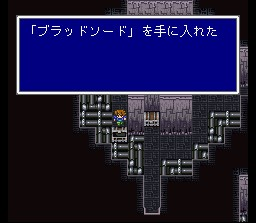
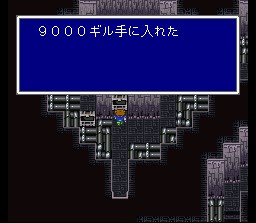
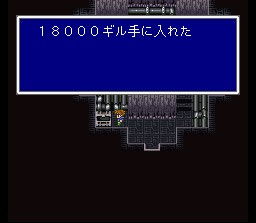
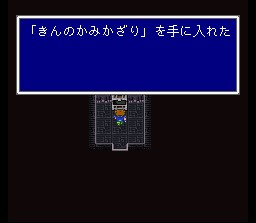

바리어의 탑
탑에 들어가면 제자는 아래층의 동력실로 가서 동력을 끄고, 일행은 탑 꼭대기의 안테나를 부수기로 합니다. 그리고 교신을 위해 무전기를 가집니다. (잠수함으로 돌아가면 다시 함대로 돌아갈 수는 있습니다.)
이제 탑따라 죽 올라갑시다. 아이템들 챙기시고.. 블러드스워드는 적의 HP를 가져오는 검인데, 명중률이 낮으니 난타나 노리기 등으로 사용해야 합니다. 여기서는 배울 청마법들이 많습니다. 레벨트리커로부터 레벨4그라비가와 레벨2올드를, 트라벨러에게 타임슬립을, 지구라트기가스에게 가드오퍼를 배울 수 있습니다. 그리고 지구라트기가스는 파르티잔이라는 좋은 창을 갖고 있으니 훔치세요.
맨 꼭대기에 올라가면 안테나인 아트모스가 기다립니다. 이 녀석은 온갖 시공계 기술들을 구사하는데 상당히 까다롭습니다. 특히 코멧이 위력적인데 자주 쓰는 데다가, 툭하면 웜홀을 써서 아군을 소멸시켜 버리고 이러면 전투중 소생도 불가능합니다. 이런 어려움을 피하려면 검은 충격을 쓴 후 레벨5데스를 쓰면 됩니다. 그냥 잡아 보려 하면 쉽지 않은 도전이 될 것입니다.
안테나를 부수면 바리어는 작동을 멈추고 탑이 무너집니다. 일행은 비룡으로 탈출하지만, 제자는 결국 빠져 나오지 못하고 맙니다. 의연한 제자의 죽음과 가라프의 슬퍼하는 모습은 개인적으로 상당히 인상적이었습니다.
이제 잠수함을 얻어 바다 밑으로 다닐 수 있게 되었습니다. 가라앉은 기드의 동굴로 가야 합니다만, 먼저 무아의 마을에서 아이템과 마법을 구하고 북동쪽 사방으로 가로막힌 호수 근처에서 카토블레파스를 얻어놓는 것이 좋습니다.
기드의 동굴
무아
무아의
대삼림
북동쪽
호수
엑스데스성
사게이트성
발
성
케루브
비룡의
계곡
길의 동굴
빅브리지
루골
봉인성
쿠자
지하대하
모그리
마을